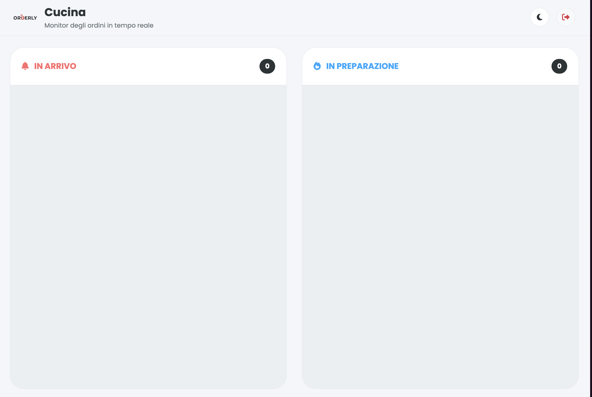

Modulo 01
Gestione Ordini
Una dashboard cucina chiara e immediata per gestire ogni ordine in arrivo. Lo staff vede le comande in tempo reale, organizzate per stato, e può aggiornarne l'avanzamento con un semplice click.
- Visualizzazione ordini in formato Kanban: in arrivo → in preparazione → pronto
- Aggiornamento dello stato di ogni ordine con un singolo click
- Dettaglio piatti, quantità e note per ogni comanda
- Indicazione del tavolo di provenienza per ogni ordine

Modulo 02
Gestione Menu
Interfaccia dedicata ai Manager per il pieno controllo del menu digitale. Tutte le modifiche sono immediate, sicure e ottimizzate per le performance in ogni dispositivo.
- Inserimento, modifica ed eliminazione rapida di piatti e categorie
- Upload delle immagini dei prodotti ottimizzato per non rallentare il caricamento
- Gestione completa dei dettagli: nome, prezzo, descrizione e allergeni
- Sicurezza dei dati: solo gli utenti con ruolo manager possono modificare il menu

Modulo 03
Ordinazione al Tavolo
Un'interfaccia intuitiva progettata per l'utente finale. Semplifica la consultazione del menu e l'ordinazione direttamente dal tavolo, con un'esperienza fluida e moderna.
- Layout a griglia per un'esplorazione veloce e chiara dei prodotti
- Modale dettagliato con zoom sulle immagini e informazioni piatto
- Gestione del carrello facile con feedback visivi immediati all'aggiunta
- Accesso sicuro tramite sessione per ogni specifico tavolo
- Modalità Dark e Light per adattarsi all'illuminazione dell'ambiente